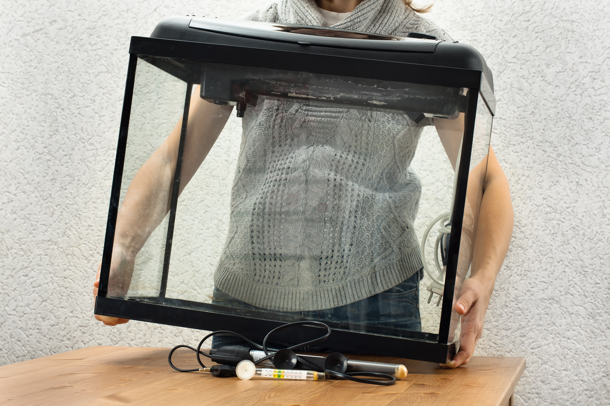
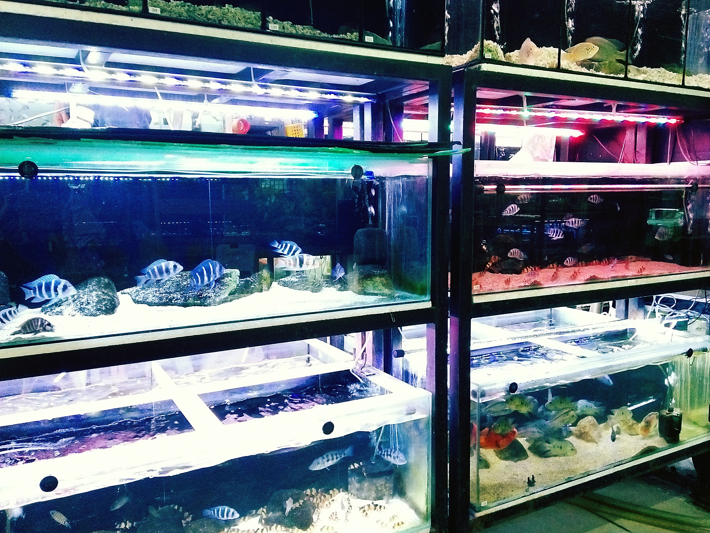

Setting Up Your Fish Tank
On This Page
Fish Tanks

Tank Size
When choosing a tank size, you need to keep tank maintenance, cost, space, and fish species in mind. Larger tanks cost more money and are hard to keep up. Fish bowls without filters and heaters are not appropriate for any fish species. Five gallons is the minimum tank size for a fish. Smaller tanks are only appropriate for snails and shrimp.
Selecting Fish

It is important to get fish that are appropriate for your tank size. Over stocked tanks can lead to ammonia spikes in the tank water. Fish kept in too small of tanks can
have severe stress, stunted growth, deformities, and early death. Check out more about fish tank size on our Fish Page. Community tanks are when
multiple fish species are kept together. This is a common practice. However, only Compatible fish should be kept together. Some fish species
are aggressive and should not be kept with other species.
The Fish Page has more information on compatible species.
See how many fish will fit in your tank
It is recommended to keep one inch of fish per gallon.
Setting Up Your Tank's Interior

- Substrate - Add 2 to 3 inches of gravel, sand, or aquasoil to the bottom of the the tank
- Decorations - Add fake or live plants, hiding spots for fish, and other fish friendly decorations to the inside of your fish tank.
- Filter - All tanks need a filter to take out toxins and waste from the water. Make sure your filter is appropriate for your tank size.
- Heater - Most tropical fish need water heaters. It is important to choose one that is appropriate for your tank size.
Starting Your New Tank
Preparing Tank Water

Add substrate, decorations, a filter, and a heater to your tank.
Fill with water. Either use tap water treatment or use bottled water. Add water conditioner.
Your tank needs to cycle. This is the process where the correct bacteria that fish need grow in your tank. These bacteria convert ammonia to nitrite to nitrate. This process takes 2-6 weeks. No fish should be added before this process is complete. The cycle can be started by letting the filter run continuously. You can also add a bottled bacterial starter or a controlled ammonia source.
Water parameters are the conditions of the water in your aquarium. Proper water conditions are essential to keeping your fish healthy. Buy a water testing kit. Using your water-testing kit, test the water every few days until your parameters meet the values below. They must be stable before adding fish.
A guide to water changes Aquarium Specialty
For most community freshwater fish, these are the desired water parameters.
The fish tank temperature usually should be 75-80 degrees. Stable water temperature is more important than hitting an exact number. It is also important to note that some fish prefer cooler water. It is important to look up what your fish species prefers. Fish that prefer different temperatures should not be kept together in a tank. If you are keeping several species together, set your tank to a temperature that all of the fish are happy with. For example, if one fish prefers temperatures of 65–77°F and other 72–82°F, a temperature of 75°F could be ideal.
pH Levels of a tank should be 6.5-7.5. The tank should be slightly acidic to neutral for most tropical fish. High Alkalinity/KH levels will cause the PH levels to be high.
Ammonia levels should be 0ppm. Any detectable ammonia levels are toxic to fish.
Nitrite(NO2-)levels should be 0 ppm. A small amount of nitrite (NO2-) is dangerous to fish.
Nitrate (NO3-) levels should be below 20ppm. Up to 40ppm can be tolerated shot term but lower is preferred.
General Hardness (GH) should be 4-12 dKH. This is the mineral content of your water. Most tropical fish prefer moderate hardness.
Carbonate Hardness (KH) should be 3-8 dKH. This helps keep the pH stable.
Alkalinity/KH should be 4-8 dKH. This measures the carbonate hardness. Hard water can make these levels too high. High Alkalinity/KH levels raise PH levels.
Here is a great resource for how to adjust water parameters SKF Aquatics' Cheat Sheet for Adjusting Water Parameters
Adding Fish

Once your tank has a stable temperature and water parameters, you can begin adding fish. It is important not to add too many at once, as this can throw off your water parameters. Start by adding just a few fish at a time. Fish need to adjust to their new tank's temperature slowly. A great way to do this is by placing the fish into the aquarium while it is still in the bag you brought it home in. This allows for the fish to slowly adjust to the new tank's water. Once the water in the bag matches the temperature of your fish tank, you can release your fish into the tank.